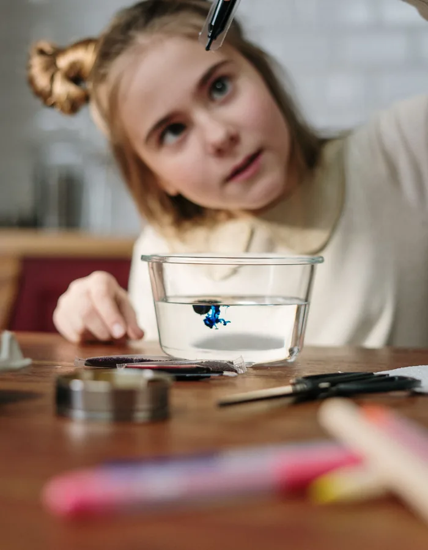

Pequeños experimentos para observar, probar y descubrir qué ocurre.
Siete formas de observar y descubrir en casa, organizadas por tipo de experimento y edad orientativa.
Las edades son orientativas. Cada niño puede disfrutar de una actividad de forma diferente y algunas propuestas pueden requerir más o menos ayuda según sus características y la dificultad de cada actividad. Todas las actividades deben realizarse siempre bajo la supervisión de un adulto responsable, utilizando materiales adecuados para la edad y siguiendo las indicaciones de seguridad correspondientes.